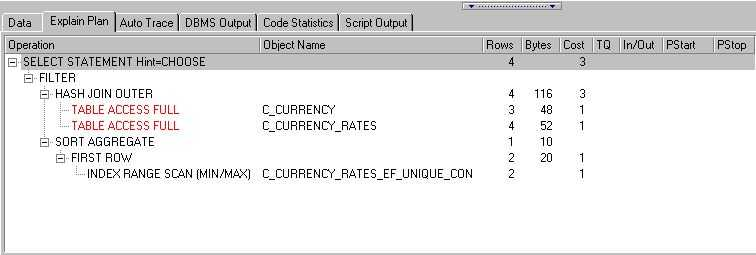

OBTAINING THE ACCESS PLAN FOR A STATEMENT
There are many tools available to help you tune your SQL. Some tools are aimed at DBA's to monitor the server, some at developers to help tune their statements. I have always preferred the standard explain plan for tuning my statements. The main reason is that it is always available, you don't need permission to install it on a clients network and it is reliable.
I would recommend to any developer just venturing into SQL tuning to stay with explain plan. Ignore the snake oil being offered by other vendors for the moment and aim to grasp the fundamentals of access paths before moving onto 3rd party tools.
Explain plan can be used for any select, insert, update or delete statement. It can also be used against statements containing PL/SQL function and packaged function calls.
Creating the necessary tables
Before you can use EXPLAIN PLAN you must have a suitable table in which the plan results are stored. Oracle supplies a script to create this table called 'utlxplan.sql' or 'XPLAINPL.SQL' (different database versions vary). All the script does is create a table.
A suitable plan table might already exist. Usually a single plan table is created a public synonym created for all users with the appropriate priveleges.
The Explain Plan
The explain plan is simply a list of the operations which Oracle has chosen to perform your query. The actual output of the plan can at first site look complicated but Oracle have supplied scripts to simplify the output.
The main form of obtaining a plan is very simple
EXPLAIN PLAN FOR SELECT * FROM LOTS_OF_NUMBERS WHERE NUMBER_VALUE < 3000This will generate the rows in the the plan table which by default is called 'PLAN_TABLE'. The problem is that many developers might also be explaining plans into that table and so it would be difficult to distinguish which rows belong to which statement / developer.
You can be more specific by including a statement ID
EXPLAIN PLAN SET STATEMENT_ID = 'Numbers3000' FOR SELECT * FROM LOTS_OF_NUMBERS WHERE NUMBER_VALUE < 3000The number of rows inserted into the plan table vary depending on the statement you are requesting the plan for. Oracle simply inserts the rows into the table regardless of whether any are already there, what the statement id's are etc. As such the contents of the plan table can be committed or rolled back just like any other.
The content of the table can look a little daunting, and so I would suggest you use one of the many scripts available for the task.
Querying the plan tables
There are many variations of how to query the plan table. I would recommend for the moment that you begin with the Oracle supplied 'utlxpls.sql' which is designed to return the plan for the last serial query (ie non parallel execution) in the plan table. Even the SQL to query the plan table looks complex, but we do not need to know any of the detail - just the result.
In SQLPlus issuing the following command will return the results for the last explain plan (which was against the last SQL statement above).
@utlxpls.sql; | Operation | Name | Rows | Bytes| Cost | Pstart| Pstop | -------------------------------------------------------------------------------- | SELECT STATEMENT | | 3K| 11K| 8 | | | | INDEX RANGE SCAN |LOTS_OF_N | 3K| 11K| 8 | | | --------------------------------------------------------------------------------That's a fairly simple plan, we can see that Oracle is going to scan a range of values from the an index, unfortunately the formatting is a little of and we can't quite see the whole index name. You can modify the SQL in utlxpls.sql if you wish to avoid this.
We can see that as a result of the index range scan, Oracle will fetch 3000 rows, a total of 11000 bytes with a total cost (Disk I/O) of 8 (at 8K per block that's 64K of disk reads).
Here's a slightly more complex plan...
| Operation | Name | Rows | Bytes| Cost | Pstart| Pstop | -------------------------------------------------------------------------------- | SELECT STATEMENT | | 4 | 116 | 3 | | | | FILTER | | | | | | | | HASH JOIN OUTER | | 4 | 116 | 3 | | | | TABLE ACCESS FULL |C_CURRENC | 3 | 48 | 1 | | | | TABLE ACCESS FULL |C_CURRENC | 4 | 52 | 1 | | | | SORT AGGREGATE | | 1 | 10 | | | | | FIRST ROW | | 2 | 20 | 1 | | | | INDEX RANGE SCAN (MIN/|C_CURRENC | 2 | | 1 | | | --------------------------------------------------------------------------------We don't need to see the actual SQL but starting with the innermost statements (the bottom) we can see that Oracle is going to use an index range scan to find a minimum or maximum value. It also knows it only needs the first result of this.
Both tables are tiny, so full table scans have been opted for even though indexes exist, the tables will be read into memory and hash joined (Oracle will hash the primary keys to perform the join).
The result will then be sorted to apply the lower join and the entire result set filtered to obtain the required row.
Total bytes worked with is 116, and the cost in disk I/O is 3 blocks (24K).
The intricacies of each row in the plan table are far too detailed to go into here. In fact I'm not sure I would be able to adequately explain each type of row you might see. All I can suggest is that you look for...
SELECT *
FROM (
SELECT *
FROM PEOPLE
WHERE GENDER = 'M'
)
WHERE AGE = 34;
SELECT *
FROM (
SELECT *
FROM PEOPLE
WHERE AGE = 34
)
WHERE GENDER = 'M';
I know both statements are never going to be found in the real world but they show the point. The first
statement would cause an index range scan resulting in 10000 records being filtered in memory (and the
relevant amount Disk I/O and memory usage. The second statement would cause an index range scan resulting
in 200 records being filtered in memory. The Disk I/O of the second statement would also be subsequently
lower.
Both statements achieve the same result, but with the first statement being 50 times more resource hungry.
Doing it the TOAD way
TOAD Is becoming more and more popular and I see it at many more customer sites by the day. As it is also my tool of choice I though it only fair to include a nice feature of TOAD which simplifies obtaining a plan.
TOAD also requires a plan table to be present and supplies it's own script for this purpose. If it has not already been executed, you can find this script in your TOAD directory under the 'Temps' subdirectory. Under some versions of TOAD the 'TOADPREP.SQL' script builds the TOAD plan tables (along with other bits and pieces) and other versions have it in a separate script called 'TOADPLAN.SQL'.
Once this script has been executed you can obtain a plan quite simply at any SQL Editor window by placing your cursor on the statement and pressing CTRL-E.
If all is configured correctly you should see the following.... 
I find the Toad presentation of the plan results to be far easier to work with. If you use another third party tool (PLSQL Developer etc) they will almost certainly have a similar shortcut to obtain a plan.